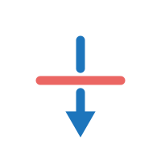

| Events | Severity | ||
|---|---|---|---|
Infinity (+)
This is detected when operations produce positive infinity, such as 1.0 / 0.0.
Infinities propagate through calculations: for example, 2 + ∞ = ∞.
|
2 | ||
Infinity (-)
This is detected when operations produce negative infinity.
|
0 | ||
NaN
NaN (not a number) are the result of invalid operations, such as 0/0 or sqrt(-1).
|
1 | ||
Division by zero
This occurs when a finite nonzero number is divided by zero. This typically produce an infinity.
|
1 | ||
|  | Underflow (subnormal)
Underflows are detected when an operation produces a subnormal number
because the result was not representable as a normal number. Certain compiler optimizations
can produce unexpected results when operands are subnormal numbers.
|
567 | |
Comparison
This occurs when two floating-point numbers are compared for equality.
Often comparing if two floating-point numbers are equal is not a good idea.
|
10 | ||
Cancellation
Cancellation occurs when two nearly equal numbers are subtracted.
By default, this event is detected when at least ten decimal digits are lost due to a subtraction.
|
335 | ||
Latent Infinity (+)
This is detected when an operation produces a normal number that is large,
and it is in close proximity to positive infinity.
|
3378 | ||
Latent Infinity (-)
This is detected when an operation produces a normal number that is large,
and it is in close proximity to negative infinity.
|
0 | ||
Latent underflow
This is detected when an operation produces a normal number that is small
and it is in close proximity to becoming an underflow (subnormal number).
|
2456 |
| Code paths: | /Users/lagunaperalt1/projects/fpchecker/FPChecker/tests/cpu_checking/static/test_full_report_generation, /path/to/long/code/name/in/filesystem |
| Files affected: | 24 |
| Lines affected: | 3456 |